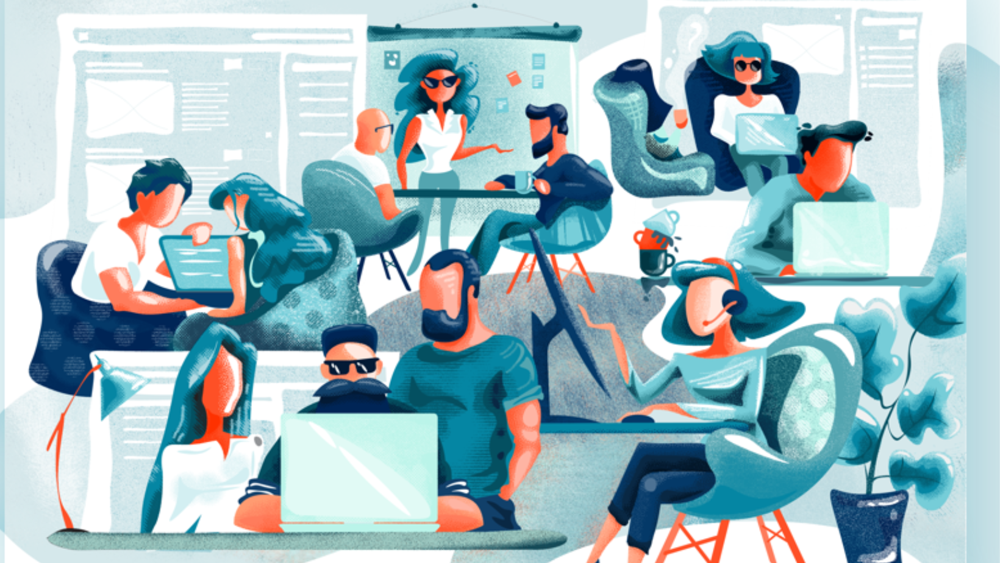

El grupo Kernel Web nace después de que nuestra integrante Lisbeth ingresara con ese apodo a una
clase,
después de varios llamados y advertencias se identificó, dando con eso el nombre emblemático a nuestro grupo.